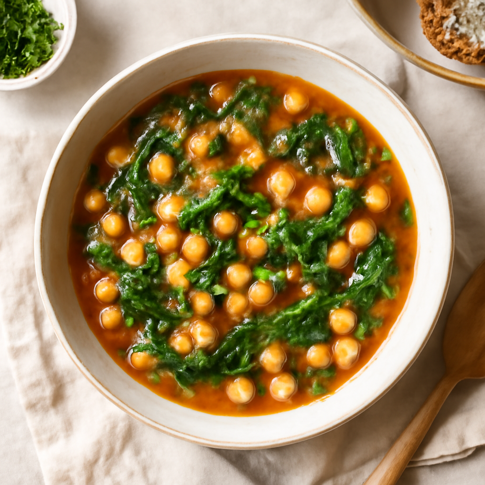

Thursday — Chickpea and Spinach Stew

Cook Time: 30 minutes
Method: Pressure Cooker
veganstewhealthy
Ingredients for 6
- 2 cups canned chickpeas (rinsed)
- 4 cups vegetable broth
- 2 cups spinach
- 1 onion (diced)
- 2 cloves garlic (minced)
- 1 teaspoon cumin
- Salt to taste
Instructions
- In the pressure cooker, sauté onion and garlic until soft.
- Add chickpeas, broth, spinach, cumin, and salt.
- Seal and cook on high pressure for 10 minutes with a natural release.
Toddler Notes
- Mash or blend stew to a smoother texture for toddlers.
- Ensure no large chickpeas or pieces that could cause choking.
← Back to weekly plan